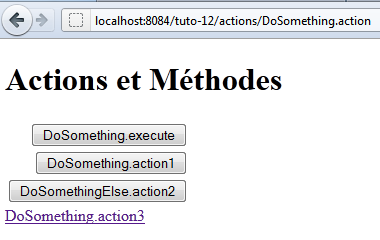
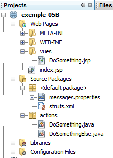

7. Example 05B – Navigating a Data Entry Form
We are examining a form with several buttons to submit the entered data to an action.

7.1. The NetBeans project
The NetBeans project is as follows:

The project components are as follows:
- [DoSomething.jsp]: the application’s single view, which displays the three navigation buttons and a link.
- [DoSomething.java] and [DoSomethingElse.java]: the two actions of the project
- [messages.properties]: the internationalized messages file
- [struts.xml]: the Struts 2 configuration file
7.2. Configuration
The following [struts.xml] file configures the application:
<!DOCTYPE struts PUBLIC
"-//Apache Software Foundation//DTD Struts Configuration 2.0//EN"
"http://struts.apache.org/dtds/struts-2.0.dtd">
<struts>
<constant name="struts.custom.i18n.resources" value="messages" />
<package name="actions" namespace="/actions" extends="struts-default">
<action name="DoSomething" class="actions.DoSomething">
<result name="success">/views/DoSomething.jsp</result>
</action>
<action name="DoSomethingElse" class="actions.DoSomethingElse">
<result name="success">/views/DoSomething.jsp</result>
</action>
</package>
</struts>
- The action [/actions/DoSomething] will instantiate the class [actions.DoSomething], and its execute method will be executed by default. This default behavior can be overridden if the parameters passed to the [DoSomething] action specify a different method. Regardless of which method is executed, it must return the navigation key "success" since only this key has been defined. The view [DoSomething.jsp] will then be displayed.
- The configuration of the action [/actions/DoSomethingElse] is identical.
7.3. The message file
The message file [messages.properties] is as follows:
form.title1=Actions and Methods
form.title2=Actions and Methods
form.execute=DoSomething.execute
form.action1=DoSomething.action1
form.action2=DoSomethingElse.action2
form.action3=DoSomething.action3
7.4. The [DoSomething.jsp] view
The [DoSomething.jsp] view is as follows:
Its code is as follows:
<%@page contentType="text/html" pageEncoding="UTF-8"%>
<%@ taglib prefix="s" uri="/struts-tags" %>
<!DOCTYPE html>
<html>
<head>
<meta http-equiv="Content-Type" content="text/html; charset=UTF-8">
<title><s:text name="form.title1"/></title>
</head>
<body>
<h1><s:text name="form.title2"/></h1>
<s:form action="DoSomething">
<s:submit key="form.execute"/>
<s:submit key="form.action1" method="action1"/>
<s:submit key="form.action2" action="DoSomethingElse" method="action2"/>
</s:form>
<s:url id="url" action="DoSomething" method="action3"/>
<s:a href="%{url}"><s:text name="formulaire.action3"/></s:a>
</body>
</html>
- Line 11: The form will be submitted to the [DoSomething] action. This does not necessarily mean that this action will be triggered. It depends on the submit button used for the POST.
- line 12: the submit button specifies neither an action nor a method. The [DoSomething] action specified by the <form> tag will be instantiated. The method executed will be the one defined in the [struts.xml] file, the execute method.
- Line 13: The submit button specifies a method. The [DoSomething] action specified by the <form> tag will be instantiated. The method executed will be the action1 method.
- Line 14: The submit button specifies an action and a method. The [DoSomethingElse] action will be instantiated. The method executed will be action2.
- Lines 16–17: A link to the [DoSomething] action and the action3 method. The [DoSomething] action will be instantiated and its action3 method executed. Unlike the submit buttons, clicking the link triggers a GET request rather than a POST request. Therefore, no parameters are posted.
The HTML code generated by this code, when the URL [http://localhost:8084/exemple-05B/actions/DoSomething.action] is requested, is as follows:
- Line 9: The form tag for the HTML form. The action attribute specifies the URL to which the form parameters will be posted. This URL is that of the [DoSomething] action.
- Lines 11, 13, 15: The name attributes of the buttons will be posted to the target action of the submit button. This is what allows Struts to determine which action to instantiate and which method to execute.
- Line 13: The name=method:action1 attribute indicates that the DoSomething.action1 method must be executed.
- Line 15: The attribute name=action:DoSomethingElse!action2 indicates that the DoSomethingElse.action2 method must be executed.
- Line 11: The attribute name="form.execute" specifies neither an action nor a method. Therefore, the DoSomething.execute method will be executed.
- Line 19: The link explicitly requests the execution of the DoSomething.action3 method
7.5. Actions
The [DoSomething] action is as follows:
package actions;
import com.opensymphony.xwork2.ActionSupport;
public class DoSomething extends ActionSupport {
public DoSomething() {
System.out.println("DoSomething");
}
@Override
public String execute() {
System.out.println("DoSomething.execute");
return SUCCESS;
}
public String action1() {
System.out.println("DoSomething.action1");
return SUCCESS;
}
public String action3() {
System.out.println("DoSomething.action3");
return SUCCESS;
}
}
- The execute, action1, and action3 methods write to the web server console and return the success navigation key.
- Line 8: The constructor also writes to the web server console
The various console outputs allow you to see which methods are executed during a request.
The [DoSomethingElse] action is similar:
package actions;
import com.opensymphony.xwork2.ActionSupport;
public class DoSomethingElse extends ActionSupport {
public DoSomethingElse() {
System.out.println("DoSomethingElse");
}
@Override
public String execute() {
System.out.println("DoSomethingElse.execute");
return SUCCESS;
}
public String action2() {
System.out.println("DoSomethingElse.action2");
return SUCCESS;
}
}
7.6. The tests
The tests show the following results (on the web server console):
- When the [DoSomething.execute] button is clicked, the [DoSomething] action is instantiated and its execute method is executed.
- When the [DoSomething.action1] button is clicked, the [DoSomething] action is instantiated and its action1 method is executed.
- When the [DoSomethingElse.action2] button is clicked, the [DoSomethingElse] action is instantiated and its action2 method is executed.
- When the [DoSomething.action3] link is clicked, the [DoSomething] action is instantiated and its action3 method is executed.